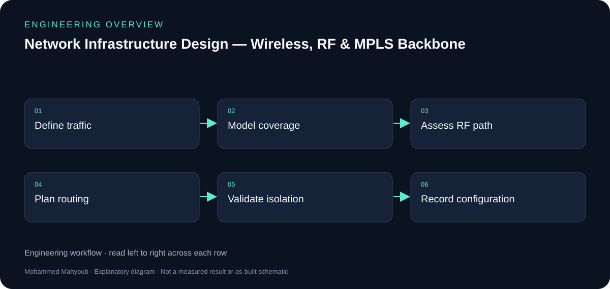
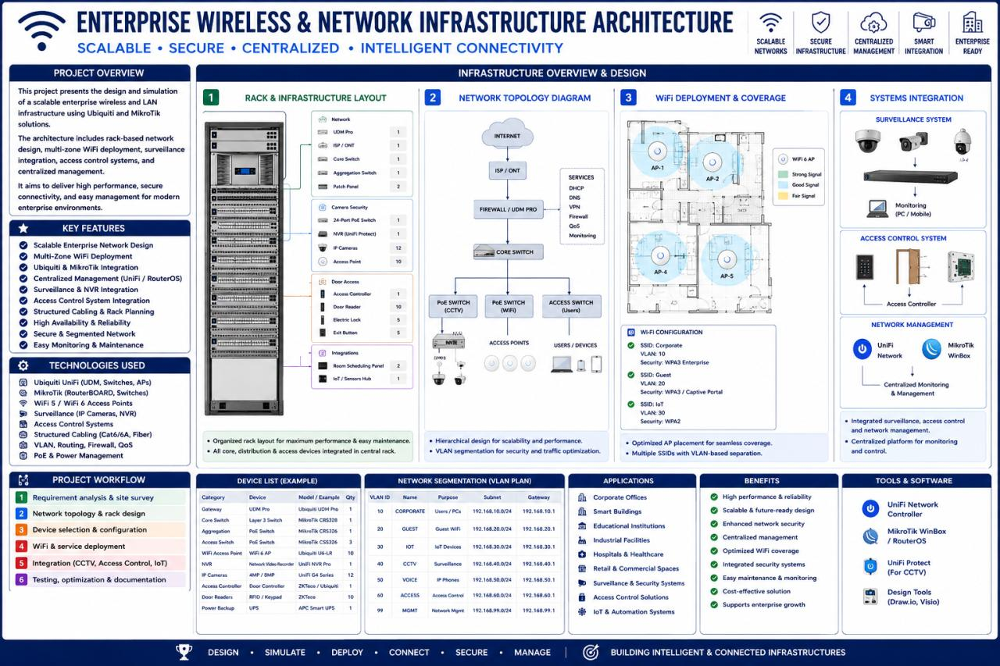

Network Infrastructure · RF Planning · Service-Provider Networks
Network Infrastructure Design — Wireless, RF & MPLS Backbone
Designed and validated multi-site network infrastructure, from wireless access and RF links to a carrier-grade MPLS backbone, using MikroTik, Ubiquiti, Cisco, RF planning, and GNS3.
System overview

Author
Mohammed Mahyoub
Wireless
Multi-zone wireless and LAN architecture: coverage modelling, point-to-point links, antenna alignment, capacity planning, secure routing, VPN, traffic management, and surveillance and access-control connectivity.
Backbone
Carrier-grade MPLS backbone built and validated with Cisco 7200 routers in GNS3: OSPF, MPLS-TE, VRF / MPLS VPN, and MP-BGP for multi-site connectivity and traffic engineering.
Output
Network diagrams, equipment layouts, configurations, engineering calculations, and validation documentation.
Engineering rationale
Access and backbone solve different problems
Wireless coverage and point-to-point links provide local access and site transport. Routing, VPNs and MPLS/VRF connect sites and separate service traffic. The new overview shows those functional layers without inventing an exact physical topology.
RF planning
Coverage, antenna alignment and capacity must be evaluated together. The source material includes Ubiquiti planning views and a VB.NET link-budget tool. A favourable path-loss estimate alone does not demonstrate Fresnel clearance or capacity under interference.
MPLS workstream
The documented Cisco 7200/GNS3 work uses OSPF, MPLS traffic engineering, VRF/MPLS VPN and MP-BGP. Configuration exports and route verification are stronger evidence than a topology picture alone; the checklist describes the evidence to attach without claiming unrecorded results.

Evidence and validation
Suggested evidence checks for reviewing this work. These are not claimed pass results.
- Coverage and RF path assumptions
- Link budget and Fresnel clearance
- VRF separation and route reachability
- Configuration exports and traffic validation
Source gallery
Figures from the existing project repository, public notebook outputs, or corresponding LinkedIn project media. Original screenshots and existing explanatory figures retain their source context.

